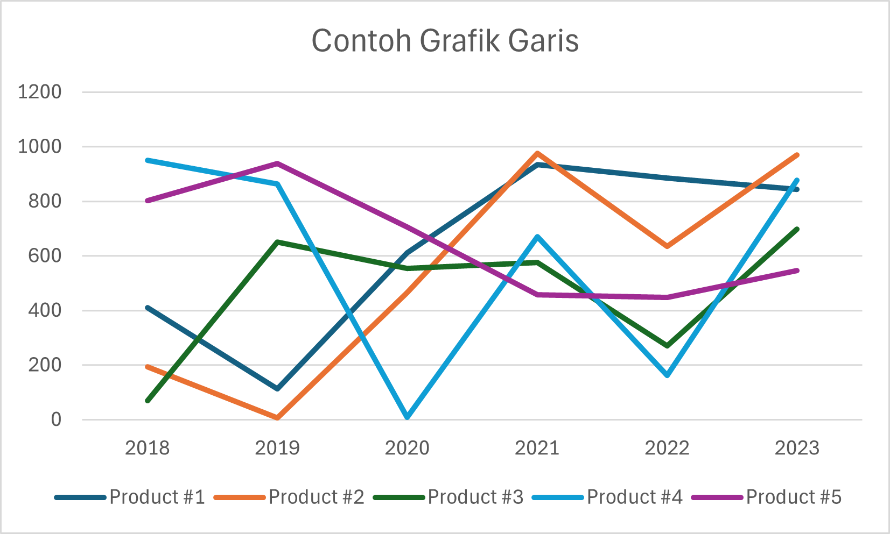
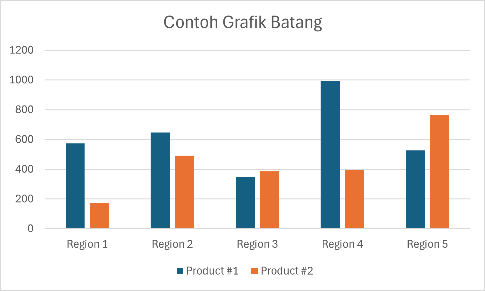
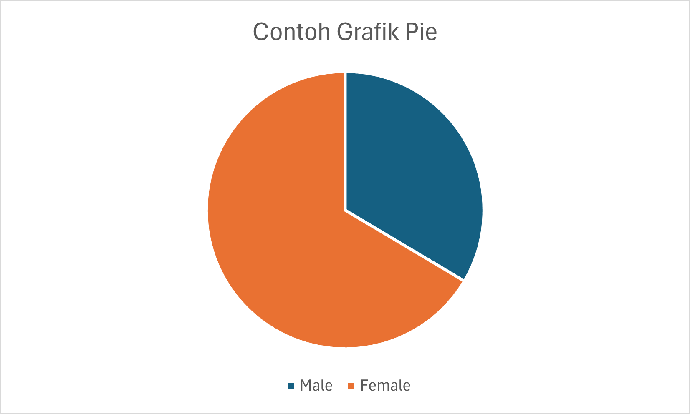
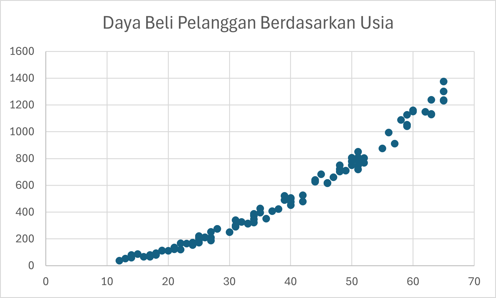
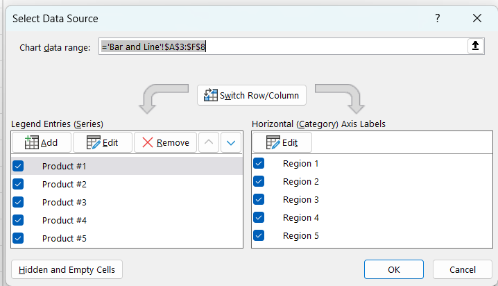
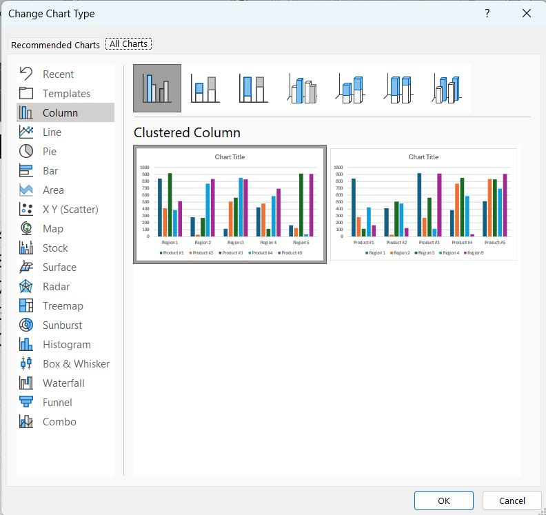
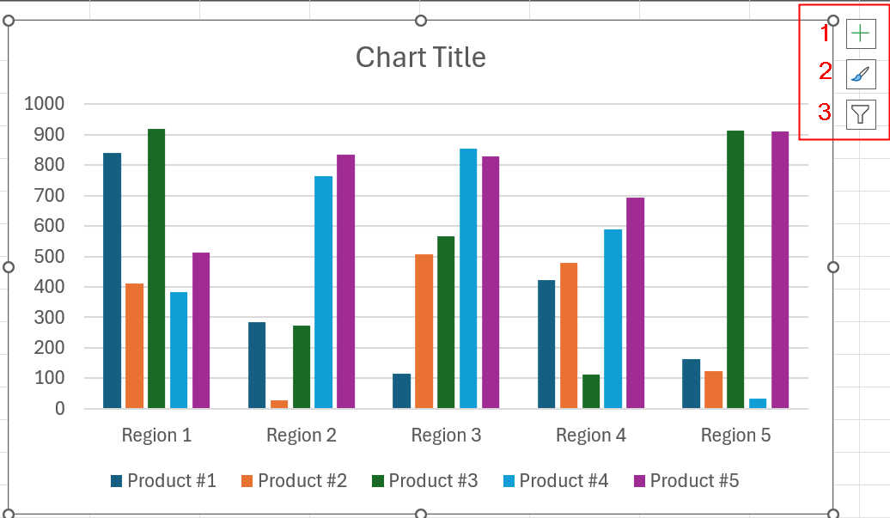
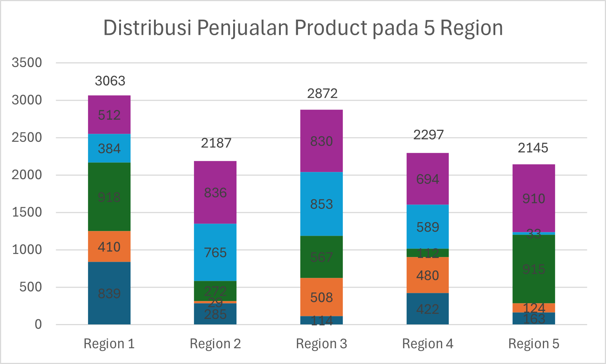

Data Visualization
Data Visualization adalah teknik untuk memaparkan data melalui grafik agar lebih mudah dipahami dan dianalisis. Untuk metode visualisasi, kita dapat menggunakan berbagai macam tools yang tersedia, seperti Ms. Excel, Tableau, Power BI, dan Python. Untuk artikel ini, kita akan membahas tentang visualisasi data menggunakan Ms. Excel.
Jenis-jenis Visualisasi Data
Grafik Garis
Grafik garis adalah jenis grafik yang digunakan untuk menunjukkan tren data seiring waktu. Misalnya, kita dapat menggunakan grafik garis untuk memvisualisasikan penjualan produk selama beberapa tahun.
Grafik Batang
Grafik batang digunakan untuk membandingkan kategori data yang berbeda. Misalnya, kita dapat menggunakan grafik batang untuk membandingkan penjualan produk di beberapa wilayah.
Grafik Pie
Grafik pie digunakan untuk menunjukkan proporsi data dalam satu set data. Misalnya, kita dapat menggunakan perbandingan penjualan produk berdasarkan jenis kelamin berdasarkan gambar di atas.
Grafik Scatter
Grafik scatter digunakan untuk menunjukkan hubungan antara dua variabel. Misalnya, kita dapat menggunakan grafik scatter untuk menunjukkan hubungan antara usia dan daya beli mahasiswa.
Visualisasi Data Menggunakan Ms. Excel
Ms. Excel menyediakan berbagai fitur untuk membuat visualisasi data yang menarik. Berikut adalah langkah-langkah untuk memvisualisasikan data menggunakan grafik di Ms. Excel:
Siapkan data yang ingin divisualisasikan di Ms. Excel. Untuk demonstrasi, kita bisa membuka file berikut: Template.xlsx
Block semua data yang ingin ditampilkan dalam grafik. Jika kita ingin label data ingin ditampilkan, block data tersebut.
Klik tab Insert → Charts → Pilih jenis chart yang diinginkan.
Customize Grafik Sesuai Kebutuhan
Jika kita klik kanan grafik yang kita buat, kita dapat memilih “Select Data” untuk mengganti data yang ingin ditampilkan.
Kita juga dapat mengganti jenis grafik dengan cara klik kanan grafik dan pilih “Change Chart Type”.
Selain itu, kita juga dapat filter data, mengubah elemen apa saja yang ingin ditampilkan, dan mengatur tampilan grafik sesuai kebutuhan kita dengan mengklik chart, lalu pilih pop-up yang tampil di kanan atas chart kita.
Latihan
Buatlah grafik berikut berdasarkan data di file Template.xlsx
